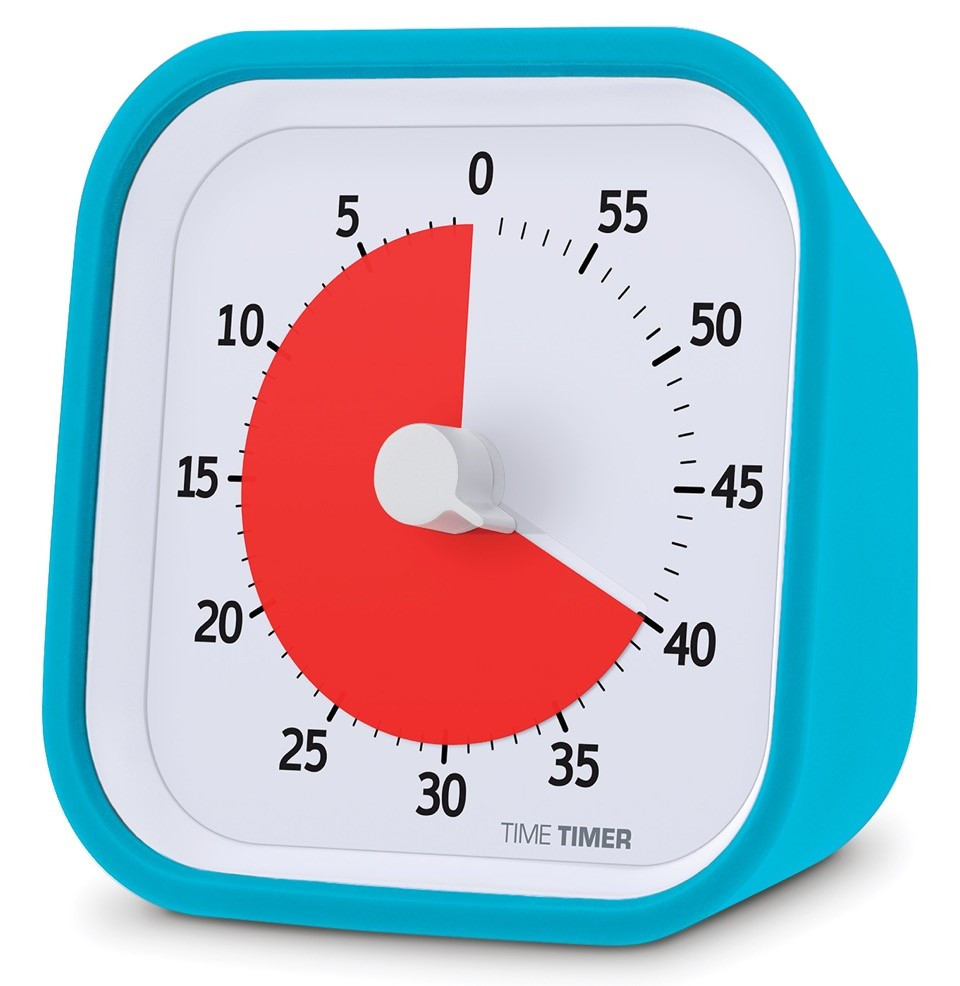
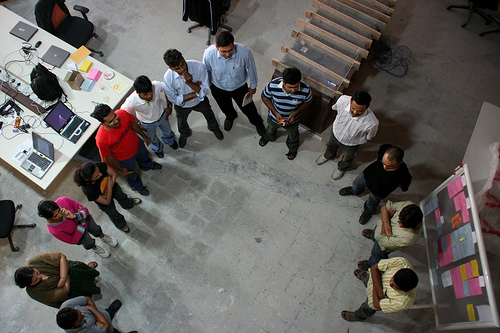
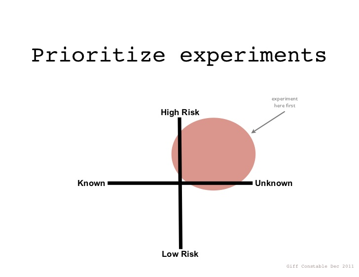

Lean UX Workshop
http://marcodussin.github.io/leanux_tag
UX Design Master
TAG Innovation School
Marco Dussin
marco@duss.in - @MarcoDussin
Qualcosa su di me

Front and Back End Engineer, Coworker @ TAG Padova, Product Designer, Beer Lover
http://marco.duss.in
it.linkedin.com/in/marcodussin/
Qualcosa su di voi
Slide rossa
Titolo di una sezione
Slide bianca
Spunti di discussione
Slide verde
Question time
Slide gialla
Workshop time
Time and space
La frammentazione fa male alla produttività: serve una media di 23 minuti perchè un lavoratore distratto torni al proprio task
Meeting infiniti e continui fanno male alla produttività
Il "context switch" fa male alla produttività
Esempio di impostazione del lavoro in "time boxes"
- Scegli un’attività da completare.
- Imposta il timer a 25 minuti
- Lavora sulla tua attività senza distrazioni finché il timer non avrà suonato.
- Prenditi una pausa di 5 minuti.
- Ogni 4 “boxes” prenditi una pausa più lunga di 15-30 minuti.
Come lavorare in gruppo?
"Stand Up Meetings"
Alcuni consigli per la discussione
- Usare poca tecnologia, preferire oggetti materiali (pennarelli, post-it...)
- Esplicitare le fasi divergenti e quelle convergenti
- Separare le discussioni di business da quelle tecnologiche
- Immaginare la demo
- Coinvolgere tutti i ruoli aziendali
- Misurare l'allineamento usando esercizi di feedback
Il menu di oggi
| Argomento | Boxes |
|---|---|
| Tempo già passato | 1 |
| Ripasso di ergonomia cognitiva | 1 |
| Introduzione al percorso Lean UX | 2 |
| Supposizioni vs requisiti | 1 |
| Ipotesi | 1 |
| Dichiarare le supposizioni con le personas | 2 |
| Dichiarare i risultati attesi e il modo per misurarli | 2 |
| MVP | 4 |
| Varie, domande, blablabla | 1 |
| Totale | 15 |
Ripasso di ergonomia cognitiva
Il termine "Ergonomia" è stato usato per la prima volta da Wojciech Jastrzębowski in un giornale polacco nel 1857
Ergonomia: dal greco érgon (lavoro) e ńomos (regola, legge)
Nel 1949 lo psicologo K. F. H. Murrell diede al termine il significato attuale:
...è quella scienza che si occupa dell'interazione tra gli elementi di un sistema (umani e d'altro tipo) e la funzione per cui vengono progettati (nonché la teoria, i principi, i dati e i metodi che vengono applicati nella progettazione), allo scopo di migliorare la soddisfazione dell'utente e l'insieme delle prestazioni del sistemaI.E.A. (International Ergonomics Association)
Science Finds, Industry Applies, Man Conforms (La scienza scopre. L'industria applica. L'uomo si adegua)Motto della Chicago World's Fair del 1933
Henry Dreyfuss, Model 302 Telephone, 1937

Henry Dreyfuss, Model 500 Telephone, 1953
Henry Dreyfuss, Designing for People, 1955

I principi che un buon design dovrebbe seguire sono:
- fornire visibilità;
- fornire un buon mapping;
- fornire inviti e vincoli all'uso;
- fornire feedback;
- fornire consistenza;
- fornire un buon modello concettuale.
Henry Dreyfuss, Princess Telephone, 1959


Modelli di interazione (1)
Donald Norman stabilisce 7 stadi dell'azione:
- L'utente stabilisce lo scopo
- L'utente formula l'intenzione
- L'utente specifica le azioni da compiere tramite l'interfaccia
- Il sistema esegue l'azione
- L'utente percepisce lo stato del sistema
- L'utente interpreta lo stato del sistema
- L'utente valuta lo stato del sistema rispetto allo scopo
Esecuzione e valutazione sono in un loop continuo
Modelli di interazione (2)
Secondo Norman alcuni sistemi sono più difficili da usare di altri perchè ci si trova ad annaspare nell'attraversare:
- il golfo dell'esecuzione: quando la formulazione delle azioni da parte dell'utente non coincide con le azioni permesse dal sistema
- il golfo della valutazione: quando le aspettative di cambiamento sullo stato del sistema da parte dell'utente sono diverse dallo stato raggiunto dal sistema stesso
Introduzione al percorso Lean UX

11,6 secondi
(Jon Jenkins, Velocity 2011, https://youtu.be/dxk8b9rSKOo)
Sviluppo agile di software
Stiamo scoprendo modi migliori di creare software,sviluppandolo e aiutando gli altri a fare lo stesso.
Grazie a questa attività siamo arrivati a considerare importanti:
Gli individui e le interazioni più che i processi e gli strumenti
Il software funzionante più che la documentazione esaustiva
La collaborazione col cliente più che la negoziazione dei contratti
Rispondere al cambiamento più che seguire un piano
Ovvero, fermo restando il valore delle voci a destra,
consideriamo più importanti le voci a sinistra.
Che cosa è la "lean production"?


Toyota Production System (TPS)

Miglioramento Continuo (Kaizen)

Kanban

Kanban, David J. Anderson, 2007

Kanban board (immagine di @ziobrando)
Kanban game
Che cosa è il metodo "lean startup"?
The Lean Startup methodology has as a premise that every startup is a grand experiment that attempts to answer a question. The question is not "Can this product be built?" Instead, the questions are "Should this product be built?" and "Can we build a sustainable business around this set of products and services?" This experiment is more than just theoretical inquiry; it is a first product
Eric Ries
NON costruiamo oggetti che la gente NON vuole


Che cosa è la "lean UX"?
Il concetto di Lean UX nasce dal mettere assieme i principi di Lean Startup con le teorie di sviluppo agile di software. In aggiunta a queste due fondamenta, ce n'è una terza altrettanto importante: il Design Thinking come metodo adatto a fornire soluzioni pratiche e creative ai problemi.
Che cosa è la "lean UX"?
In aggiunta ai "pilastri" precedenti, la Lean UX pone meno enfasi nei "DELIVERABLES" e si focalizza maggiormente sulla comprensione condivisa dell'esperienza utente che si desidera fornire

Che cosa è la "lean UX"?
“Lean UX is, at its core, a mindset”
Jeff Gothelf
La Lean UX coinvolge team
- piccoli
- dedicati
- cross-funzionali
- che lavorano in spazi condivisi
- che comunicano tra di loro
- che imparano a rafforzare le proprie relazioni
Break down the silos!

Il processo di Lean UX

Lo scopo è far muovere in un percorso parallelo lo sviluppo e il design
Nordstrom Innovation Lab: Sunglass iPad App Case Study
In sintesi:
- team piccoli e multifunzionali
- designers + biz + developers + ... = 1 team
- la ricerca presso gli utenti è la miglior fonte di informazione
- concentrarsi nel risolvere il problema "giusto"
- generare molte opzioni e decidere velocemente quale perseguire
- riconoscere le ipotesi e validarle
Lo scopo è arrivare prima possibile a un "prototipo"
Il prototipo è il modello originale o il primo esemplare di un manufatto, rispetto a una sequenza di eguali o similari realizzazioni successive. Normalmente costruito in modo artigianale e in scala 1:1, sul prototipo verranno effettuati collaudi, modifiche e perfezionamenti, fino al prototipo definitivo, da avviare alla produzione in serie.
da Wikipedia
Quindi un prototipo è una primissima versione di una idea?
Sì, ma con qualcosa in più: è TESTABILE

1 - Supposizioni vs requisiti
suppórre v. tr. [dal lat. supponĕre, comp. di sub- e ponĕre «porre», propr. «mettere sotto»; il sign. corrente risale al lat. tardo] (coniug. come pórre). –
1. Ammettere per congettura; immaginare che una cosa sia o possa verificarsi in un determinato modo; fare una ipotesi che spieghi una realtà comunque osservata[...] anche nel linguaggio matematico e scient., ammettere come ipotesi per trarne conseguenze[...]. Anche, presumere, immaginare[...].
Treccani online
- Ogni decisione fatta a proposito dell'offerta del proprio prodotto è una decisione che impatta sull'esperienza del destinatario di tale prodotto
- Prioritizziamo il processo di apprendimento piuttosto che quello di crescita
- Le proprie supposizioni vanno dichiarate per poter essere testate
- Prioritizziamo il fare piuttosto che l'analisi
- Valutiamo i nostri risultati in modo continuo, e preparati anche a repentini cambi di rotta
Dichiarare le proprie supposizioni
Quali sono le supposizioni a proposito dei nostri utenti/acquirenti/clienti (i loro bisogni e le nostre soluzioni) che abbiamo posto a fondamento del progetto, e che, se confutate, ci porteranno al fallimento?
Esempi di supposizioni
- Come acquisiremo nuovi clienti?
- Come guadagneremo nuova liquidità?
- Chi sono i nostri competitor?
- Che cosa ci differenzia nel mercato?
- Quali sono i nostri rischi? Quale il maggiore?
- Come li supereremo?
Un esempio
- http://marcodussin.github.io/leanux_tag/#/9/5
- Gazzetta
- analisi dati Gazzetta
- Auto e donne
Come validare le idee di prodotto? Come capire "quale" prodotto è desiderato?
Supposizioni
- Chi è l'utente?
- Quali risultati sono attesi?
- Che features sono necessarie per raggiungere tali risultati?
- Quali risultati di business sono importanti per noi?
2- Formulazione delle ipotesi
Noi crediamo che:
- [facendo questo, con questa feature]
- per [questo utente]
- otterremo [questo risultato]
Sapremo che è vero quanto avremo ottenuto
- [questa risposta dal mercato, questo risultato di business]
Clusterizziamo
- per bisogni oppure...
- per scopi oppure...
- per preferenze oppure...
- per obiettivi di business oppure...
- ...
Ordiniamo per priorità
3- Identificare le personas
4- dichiarare i risultati attesi e il modo per misurarli
Che cosa è "avanzamento"?
- Industria manifatturiera: produzione di beni di qualità
- Agile software: rilascio di software funzionante
- Lean Startup: validated learningi>
- Lean UX: risultati e loro impatto
Prodotto, risultato, impatto
- Prodotto: "il software che diamo al cliente", "il bene che inscatoliamo e spediamo"
- Risultato: "il cambiamento misurabile che abbiamo apportato nelle abitudini del cliente"
- Impatto: "la misura ad alto livello della salute del nostro business"
Prodotto, risultato, impatto
- Prodotto: "la nuova pagina di registrazione del sito"
- Risultato: "numero di utenti che arrivano alla fine del processo di registrazione senza fare errori"
- Impatto: "nuovi utenti registrati in un anno rispetto allo scorso"
AARRR è una metrica codificata da Dave McClure [http://www.slideshare.net/dmc500hats/startup-metrics-for-pirates-long-version]
- Acquisition: l’acquisizione, quindi portare gli utenti su di un sito da diversi canali.
- Activation: l’utente effettua la sua prima visita sul sito. Importante generare una esperienza utente che sia il più possibile soddisfacente e felice.
- Retention: gli utenti che ritornano, come aumentare la percentuale di ritorno, e come trattarli al meglio quando tornano.
- Referral: quando gli utenti cui piace il prodotto decidono di consigliarlo ad altri, magari anche in cambio di un compenso di qualche tipo.
- Revenue: la parte finale della metrica, da misurare, e usare per iterare sui cinque aspetti, l’utente genera monetizzazione.
5- MVP
MVP: Minimum Viable Product
Come Groupon iniziò come blog: http://www.nextbigwhat.com/groupon-story-297/